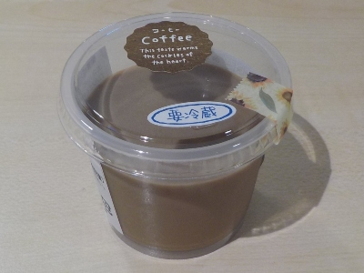

島根県大田市仁摩町天河内822
更新日 : 2026/09/27

道の駅ごいせ仁摩で買ってその場で食べました。
硬めのプリンです。私は硬めが好きなので美味しくいただきました。
道の駅の甘いものと言えばソフトクリームが定番ですが、椅子に座ってのんびりプリンもいいですね。
【おいしいものを食べよう。】【たくさん寝よう。】
【ソロ活をしよう!】【季節感のあることをしよう。】【動画視聴はほどほどに。】【当サイトの全てのコンテンツは無断転載禁止です。】